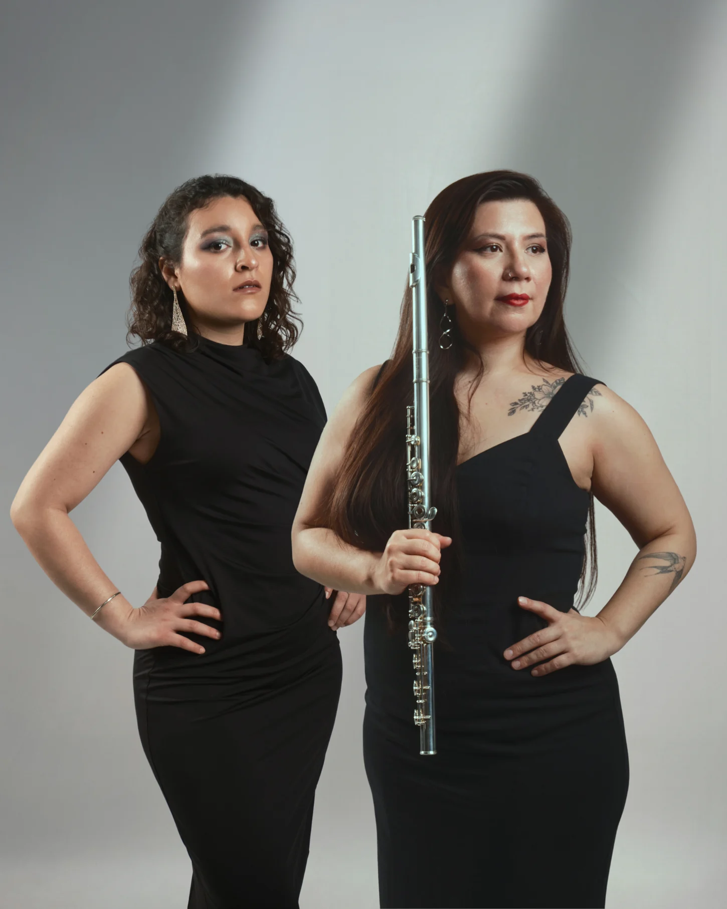
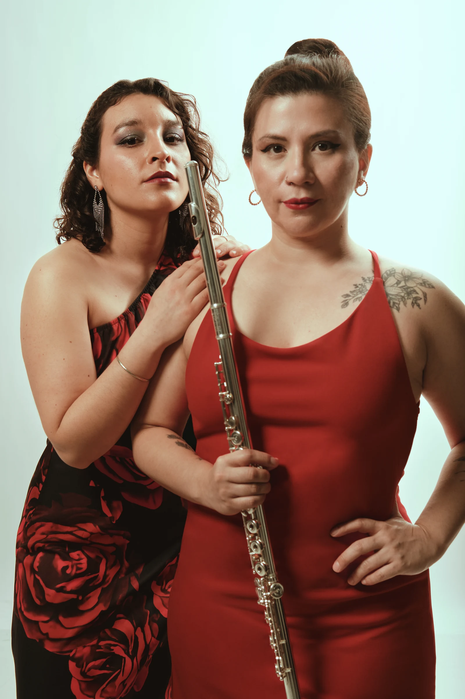
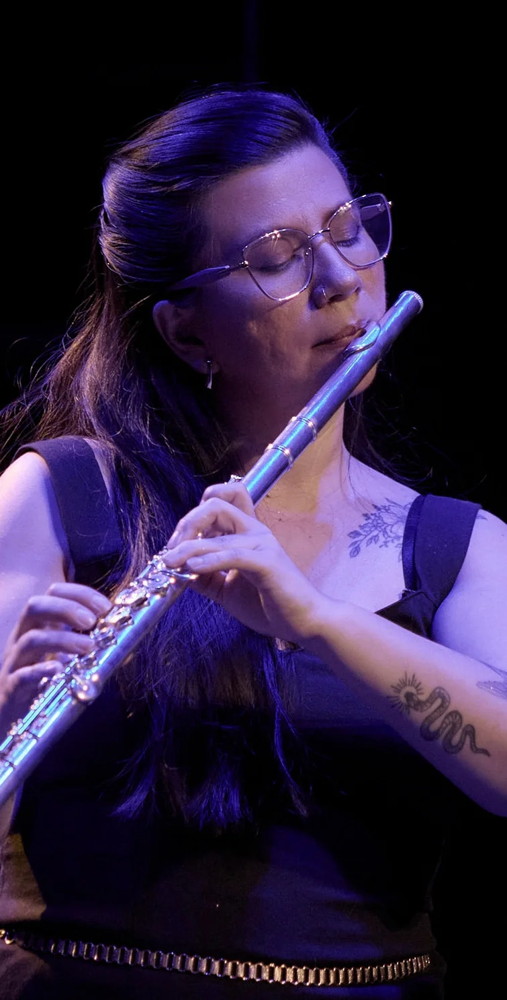
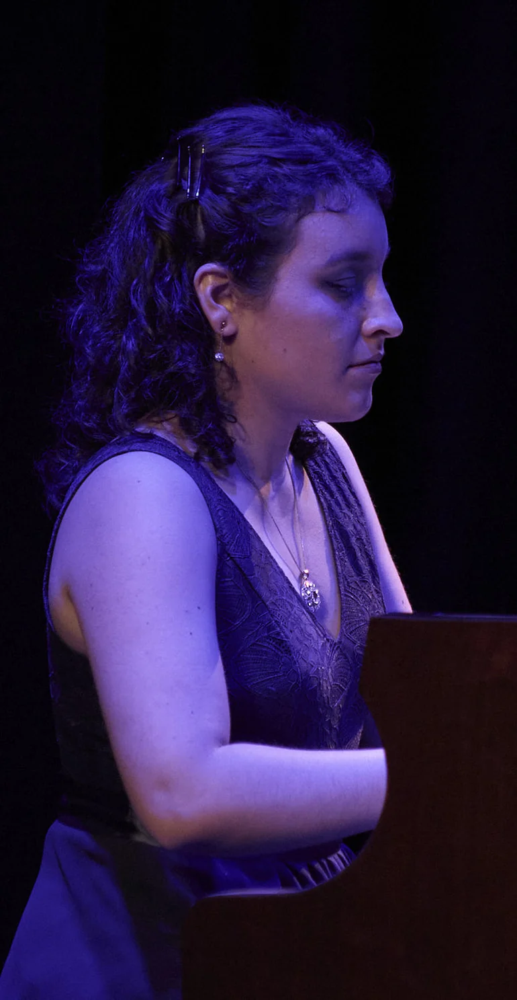
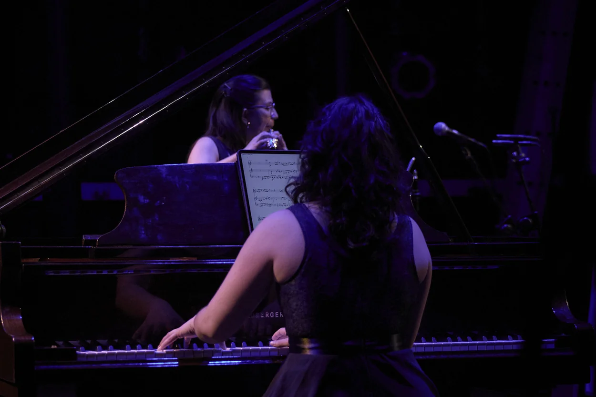
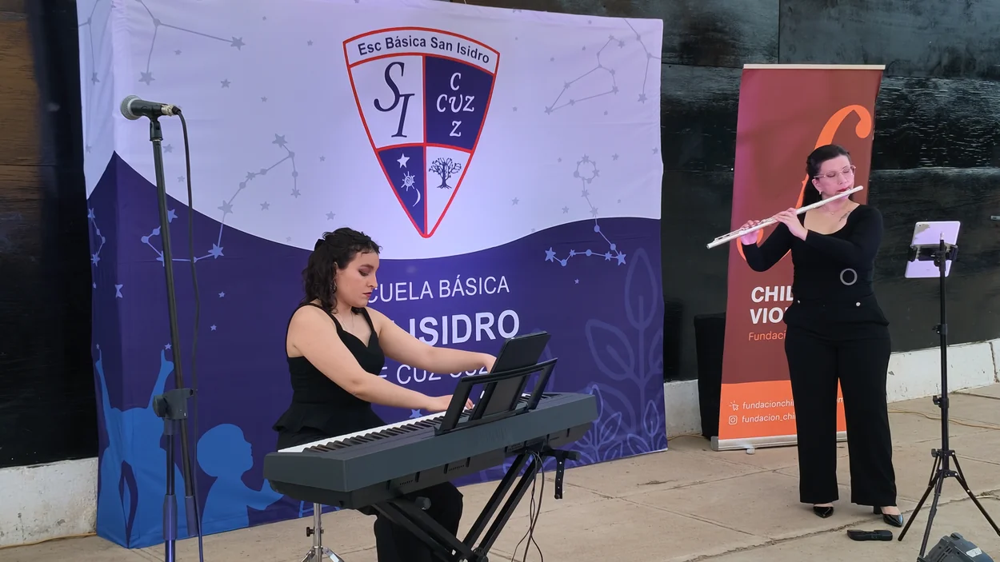
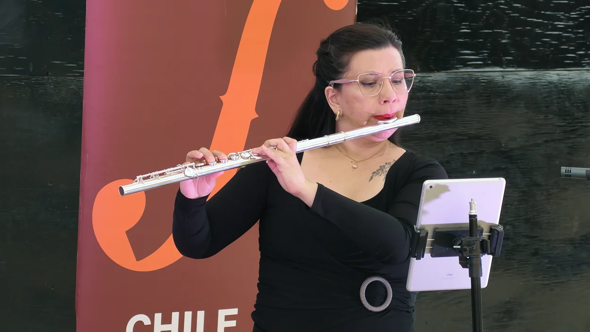

Una identidad compartida
La flauta traversa es un rasgo central del sonido de Piazzollamente. En el dúo, su presencia permite explorar la melodía desde la respiración, el fraseo y sus distintos colores.
PIAZZOLLAMENTE · FLAUTA Y PIANO
La música, mente y espíritu de Astor Piazzolla.
Valentina Galazflauta traversa
Valeria Chacónpiano


01 / EL DÚO
Valentina Galaz y Valeria Chacón integran el Dúo Piazzollamente, una formación de cámara que surge del trabajo compartido en el quinteto y desarrolla su mirada sobre la música de Astor Piazzolla en el encuentro entre flauta y piano.
El dúo forma parte de la identidad artística de Piazzollamente. La experiencia del ensamble se concentra aquí en una conversación entre dos intérpretes: la respiración y el color de la flauta dialogan con la amplitud armónica, rítmica y tímbrica del piano.
Su propuesta reúne formación académica, práctica camerística y una relación sostenida con el tango. Desde esa experiencia, aborda el lirismo, la tensión y la dimensión dramática del repertorio con una voz interpretativa propia.
02 / IDENTIDAD ARTÍSTICA
Piazzollamente nació en Mendoza y desarrolló su trayectoria entre Argentina y Chile bajo la dirección artística de Valentina Galaz. El dúo amplía las posibilidades de circulación del proyecto y conserva el trabajo de escucha, articulación y construcción expresiva del quinteto.
La flauta traversa es un rasgo central del sonido de Piazzollamente. En el dúo, su presencia permite explorar la melodía desde la respiración, el fraseo y sus distintos colores.
Flauta y piano alternan impulso, sostén y protagonismo. La precisión del trabajo conjunto convive con la flexibilidad del gesto, el silencio y la inflexión expresiva.
El formato reúne la intensidad del repertorio en una experiencia cercana, adecuada para salas de concierto, festivales y espacios de encuentro con nuevos públicos.
03 / INTÉRPRETES

Formación, interpretación e investigación
Flautista chilena y licenciada en Flauta Traversa por la Universidad Nacional de Cuyo, Argentina. Realizó estudios de Interpretación Musical en la Pontificia Universidad Católica de Chile y una movilidad académica en la Universidade Estadual Paulista, Brasil. Su formación incluye estudios de Magíster en Música Latinoamericana del Siglo XX en la UNCuyo y la Diplomatura en Música Argentina - Tango de la Universidad Nacional de San Martín.
Su trayectoria artística se ha desarrollado en Chile, Argentina, Brasil, Paraguay y Estados Unidos. Ha participado como flautista invitada con la Orquesta Sinfónica Universidad de La Serena y la Orquesta de la Universidad del Norte de Paraguay. En 2015 se presentó en Nebraska en un concierto homenaje a Cirilo Vila.
Su trabajo reúne música de cámara, repertorio latinoamericano, tango y creación contemporánea. Ha participado en estrenos y colaboraciones con compositores, y presentó una ponencia en el XI Congreso de la Sociedad Chilena de Musicología. Como directora artística de Piazzollamente, articula interpretación, gestión y circulación entre Argentina y Chile.
Interpretación, docencia y gestión cultural
Pianista chilena, Magíster en Interpretación por la Universidad de Chile, y licenciada y titulada con distinción máxima en Interpretación Musical, mención Piano, por la Universidad Austral de Chile. Entre sus reconocimientos figuran el premio del Concierto de Solistas PUCV 2025, premios en los concursos Flora Guerra 2014 y Piano Joven 2013 y 2019, y una mención honrosa en Neapolitan Master Competition 2020, entre otros.
Ha desarrollado actividad artística y de perfeccionamiento a lo largo de América y Europa. Su trayectoria comprende la interpretación solista y de cámara, la docencia, la gestión cultural y la producción discográfica.
Se ha presentado en la Gran Sala Sinfónica Nacional, el Teatro Municipal de Santiago, GAM, el Teatro del Lago, el Teatro Panguipulli y el Teatro Municipal de Viña del Mar. Ha realizado giras por todo Chile y presentaciones en otros países de Latinoamérica, incluida Centroamérica.
Actualmente integra el proyecto Violoncello Romántico Chileno junto a Paula Barrientos Advis y Colectivo Lautaro junto a integrantes de la Orquesta Sinfónica Nacional. En Piazzollamente participa en el quinteto y desarrolla junto a Valentina Galaz el repertorio del dúo de flauta y piano.

04 / REPERTORIO
Astor Piazzolla
Bordel 1900 · Café 1930
05 / PROPUESTA INTERPRETATIVA
El programa reúne distintas formas de entrar en el universo de Piazzolla. La energía de Bordel 1900 y Verano porteño convive con la intimidad de Café 1930 y la línea cantabile de Chiquilín de Bachín.
Poema valseado, Balada para un loco y Milonga de la Anunciación abren un espacio para la inflexión narrativa. En la versión instrumental, el fraseo y el color asumen la expresividad de una voz que se transforma entre la flauta y el piano.
Adiós Nonino y Le Grand Tango amplían el recorrido hacia el contraste, la memoria y la intensidad concertante. Libertango, como bis, cierra el encuentro con un pulso compartido.
06 / CIRCULACIÓN DEL DÚO · 2026
Pichidegua · Illapel · Coquimbo · Santiago
* Fotogramas de registros audiovisuales. Pichidegua: Temporada UOH. Illapel y Coquimbo: Festival Primaveras Musicales.
07 / REGISTRO EN CONCIERTO
Festival Primaveras Musicales · Centro Cultural Palace, Coquimbo · octubre de 2026



08 / PROGRAMACIÓN
La formación de flauta y piano permite articular una programación de concierto con instancias de conversación y formación, según las características de cada espacio.
Programa dedicado a Astor Piazzolla, con una lectura camerística que reúne rigor musical, contraste expresivo y cercanía con el público.
Interpretación acompañada de breves intervenciones que orientan la escucha y presentan el trabajo del dúo y las distintas facetas del repertorio.
Propuesta de clases o conversación con estudiantes en torno a la interpretación, el trabajo de conjunto, el fraseo y la preparación de repertorio.
Actividades complementarias y alcance a coordinar con la institución anfitriona.
09 / CONTACTO
Para coordinar una presentación, solicitar antecedentes o conocer las posibilidades de programación del dúo.
La música, mente y espíritu
de Astor Piazzolla.